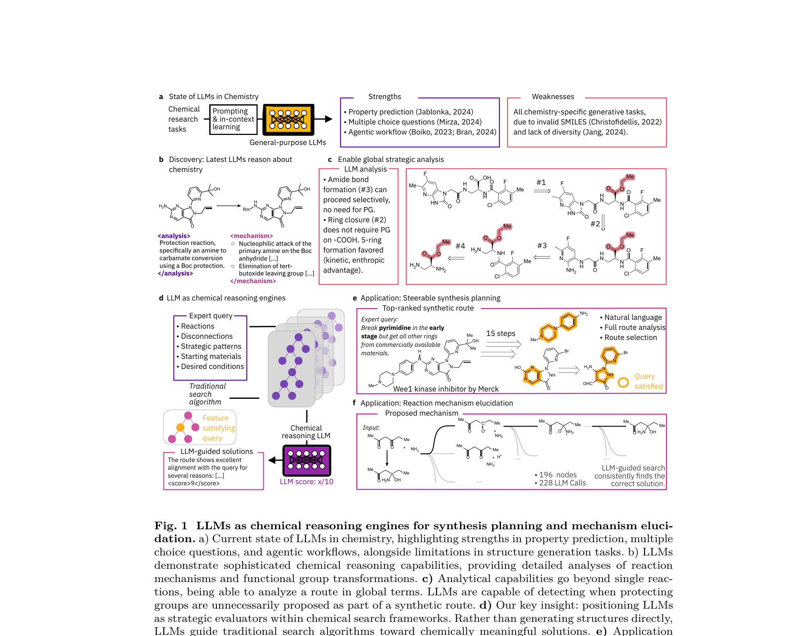

Chemical Reasoning in LLMs Unlocks Strategy-Aware Synthesis Planning and Reaction Mechanism Elucidation

Traditional machine learning approaches in chemistry rely on specialized algorithms for specific tasks. While successful in narrow domains, these systems lack the flexible reasoning and strategic multi-step thinking that characterize expert chemical problem-solving.
We present a paradigm shift: rather than using LLMs to directly generate chemical structures, we position them as sophisticated reasoning engines that guide traditional search algorithms toward chemically meaningful solutions.
This enables two key applications:
1. Strategy-aware retrosynthetic planning — Chemists can specify desired synthetic strategies in natural language (e.g., protecting group strategies, global feasibility assessment). The system uses Monte Carlo Tree Search guided by LLM evaluation to find routes satisfying these constraints.
2. Mechanism elucidation — LLMs guide the search for plausible reaction mechanisms by combining chemical principles with systematic exploration of electron-pushing steps.
Our approach combines the strategic understanding of LLMs with the precision of traditional chemical search algorithms, enabling more intuitive and powerful chemical automation systems. Newer and larger models show increasingly sophisticated chemical reasoning capabilities.